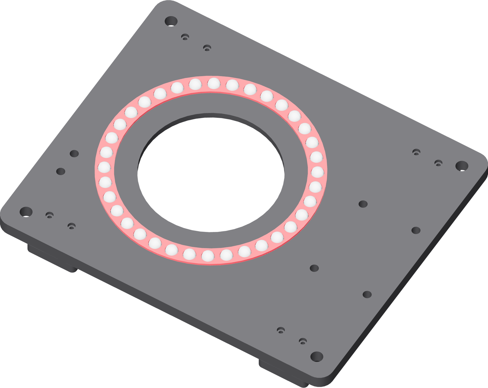

Sort and load the balls
Thirty-six 10 mm polypropylene balls out of the bag of two hundred. You are choosing thirty-six that agree with each other, not thirty-six at random.

- Measure twenty or so balls with the calliper and note the median diameter.
- Set the fixture flat and level on the bench.
- Lay the cage into the base's lower race groove.
- Fill all thirty-six pockets, measuring as you go. Reject any ball more than 0.05 mm off the median, or any that differs visibly in colour, gloss or shape. You have 164 spares.
- Roll each seated ball with a fingertip. It should turn freely in its pocket.
Gate — thirty-six that agree
Every pocket filled, every ball within 0.05 mm of the median. One oversize ball carries the whole vessel by itself and lifts the platter off the other thirty-five once per revolution.